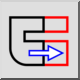
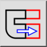

Menu: Uredi > Razširi
Shortcut: S, S
Commands: stretch | ss
Toolbar / Icon:
 

Menu: Uredi > Razširi
Shortcut: S, S
Commands: stretch | ss
Opis:
Razširi konture. To je mogoče tudi opisat kot premik vseh končnih točk v pravokotnem območju.